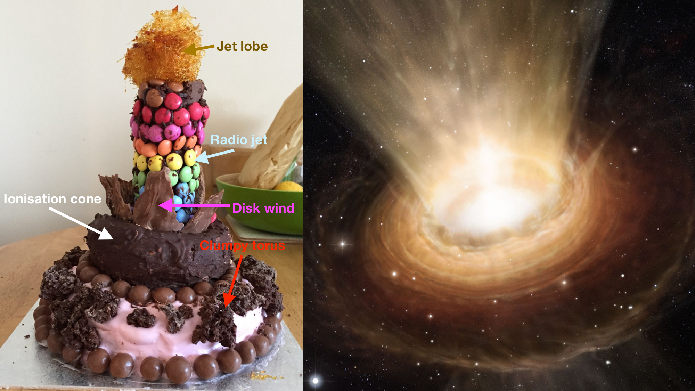
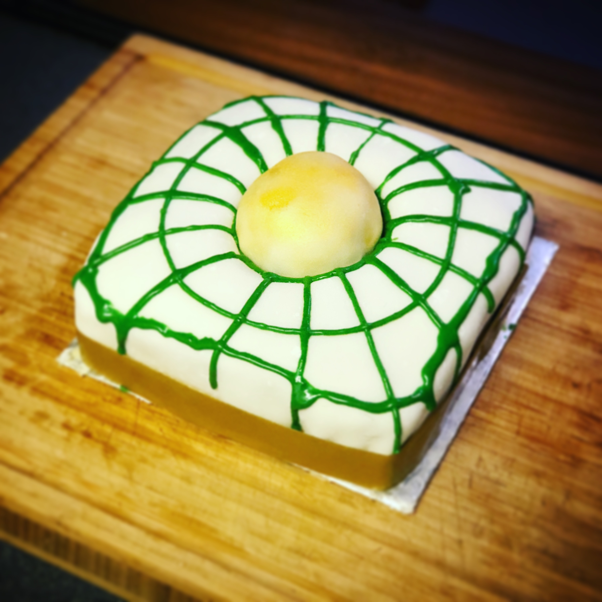
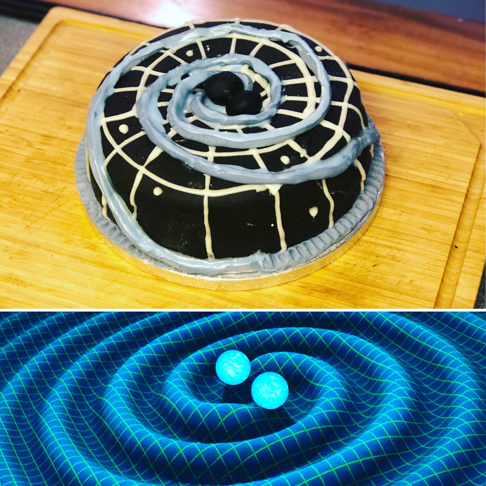
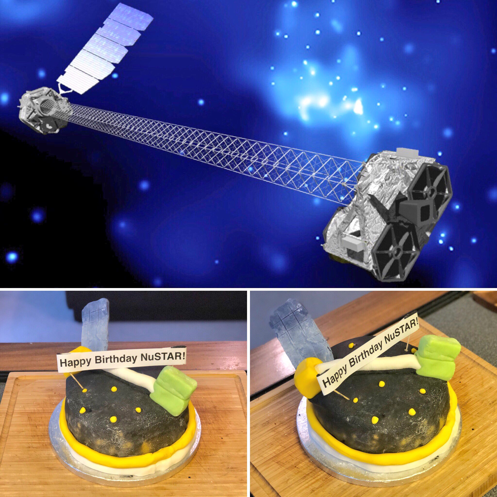

Active Galactic Nucleus Cake
Growing supermassive black holes are otherwise known as active galactic nuclei (AGN). Here I created a baked version, to incorporate as much AGN theory as possible. The final product included a clumpy-chocolate torus blocking the direct view to the hungry black hole along equatorial views, a chocolate truffle jet with spun sugar lobes, a dark chocolate ionisation cone and milk chocolate dusty wind. I've also included an artists' rendition for clarity. See if you can tell which is which!

General Relativity Cake
Here I created a salted caramel General Relativity Space-time cake, illustrating the curvature of space-time induced by a massive body.

Gravitational Waves Cake
Some theories and observations suggest that the obscuration surrounding growing supermassive black holes may arise from colliding black holes which gravitationally ‘steer’ gas and dust inwards, hiding them from our view. The collision caused in such a merger would produce gravitational waves which I replicated in this cake in fondant form.

Nuclear Spectroscopic Telescope ARray Birthday Cake
Recently, NuSTAR turned 6 years old. I have used NuSTAR a lot during my PhD to build high-energy X-ray spectra of growing supermassive black holes to classify and study these extreme physical phenomena. Click here for the full Nature Astronomy Community article I wrote on the event.
